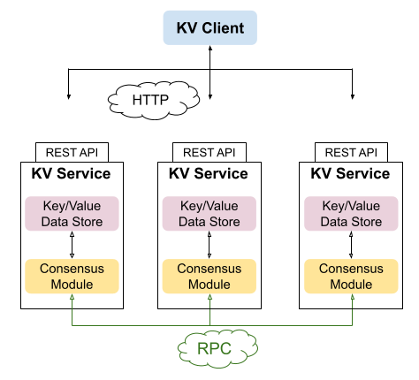
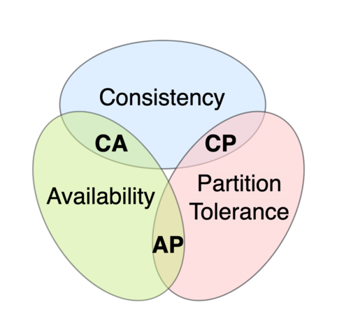

This is Part 4 in a series of posts describing the Raft distributed consensus algorithm and its complete implementation in Go. Here is a list of posts in the series:
- Part 0: Introduction
- Part 1: Elections
- Part 2: Commands and log replication
- Part 3: Persistence and optimizations
- Part 4: Key/Value database (this post)
- Part 5: Exactly-once delivery
In this part, we're going to use our Raft module to implement a simple but realistic application - a replicated key / value database with strong consistency semantics. All the code for this part is located in this directory.
Key / value database as a state machine
First of all, what's a key / value database (KV DB)? Think of it as a Go map, or as an extremely simple version of NoSQL databases like Redis or CouchDB. The basic operations our KV DB supports are:
- PUT(k,v): assign value v to key k
- GET(k): retrieve the value associated with key k
- CAS(k, cmp, v): atomic compare-and-swap. First, it reads curV - the current value associated with key k. If curV==cmp, assigns value v to k instead; otherwise, it's a no-op. In any case, curV is returned.
For example, suppose the commands in some Raft log are (in order from left to right):
PUT("x","2") PUT("y","3") PUT("x","4") PUT("z","5") CAS("x","4","8") CAS("z","4","9")
Applied to an empty DB, this log will result in these keys / values:
x=8
y=3
z=5
System diagram
In this part we're going to build a complete KV DB system - including the service and a client library:
- The diagram presents a cluster with 3 replicas [1]. Each replica is a KV DB service.
- A KV service contains a Raft Consensus Module (the diagram doesn't show the log, assuming it's just part of the CM), and a data store module that implements the actual database.
- The Raft CM of each replica is connected to the others via RPCs - these are the Raft protocol RPCs discussed extensively in previous parts.
- The KV service presents a REST API to the external world; clients can send HTTP commands to the service and get results.
- "KV Client" is a client library with a convenient API that encapsulates the HTTP interactions with KV services. This is also part of our demo, and we'll discuss it later in the post.
KV service architecture
The KV service consists of several key components:
- An instance of a Raft server; as described back in Part 1, a Raft Server wraps a consensus module with some RPC scaffolding. In this part we reuse our final Raft server code from Part 3, without any modifications.
- An underlying "data store". For our demonstration, a simple Go map will do; this is implemented in kvservice/datastore.go. This data store implements the Get, Put and CAS commands described earlier. All keys and values are Go strings (naturally, anything can be encoded in a string value).
- An HTTP server for the REST API of the service exposed to the external world.
Commands
If you recall from Part 2, we submit new commands to the Raft cluster with the ConsensusModule.Submit method. A Command is an arbitrary any value; whenever the Raft cluster reaches consensus on a log entry, it sends a "commit entry" with this command on the commit channel. Commands are application-specific, and since we're working on a concrete application now, it's time to define our command for the KV service:
// Command is the concrete command type KVService submits to the Raft log to
// manage its state machine. It's also used to carry the results of the command
// after it's applied to the state machine. These are the supported commands:
//
// CommandGet: queries a key's value
//
// * Key is the key to get, Value is ignored
// * CompareValue is ignored
// * ResultFound is true iff Key was found in the store
// * ResultValue is the value, if Key was found in the store
//
// CommandPut: assigns value to the key
//
// * Key,Value are the pair to assign (store[key]=value)
// * CompareValue is ignored
// * ResultFound is true iff Key was previously found in the store
// * ResultValue is the old value of Key, if it was previously found
//
// CommandCAS: atomic compare-and-swap, performs:
//
// if Store[Key] == CompareValue {
// Store[Key] = Value
// } else {
// nop
// }
//
// * Key is the key this command acts on
// * CompareValue is the previous value the command compares to
// * Value is the new value the command assigns
// * ResultFound is true iff Key was previously found in the store
// * ResultValue is the old value of Key, if it was previously found
type Command struct {
Kind CommandKind
Key, Value string
CompareValue string
ResultValue string
ResultFound bool
// id is the Raft ID of the server submitting this command.
Id int
}
type CommandKind int
const (
CommandInvalid CommandKind = iota
CommandGet
CommandPut
CommandCAS
)
For simplicity, I chose to include fields for several commands in the same struct instead of using an algebraic data type here.
One important thing to note is that the service's Raft cluster ID is part of the command; it will soon become clear why this is needed.
Life of a PUT request to the service
Before we dive deep into the code, let's examine the journey a successful PUT request makes through the system:
- A client sends a PUT("k", "v") request to a service, via HTTP. Let's assume it reaches the service which is currently the Raft cluster leader (we'll discuss what happens if it reaches a follower later on).
- The service's HTTP handler receives the request, constructs a Command
of kind CommandPut representing it and submits it to its Raft CM.
- At this point, the HTTP handler waits; it can't reply to the client until it knows that the command was properly replicated to the Raft cluster and committed by the CM.
- Once the command it submitted appears on the commit channel, the HTTP handler can return a success status to the client.
- Meanwhile, a process in the service watches its commit channel for new commands that reached consensus by the cluster, and updates the underlying data store.
- At the same time, the other services in the cluster - the followers - are also watching their commit channels and update their own replicas of the data store with the new PUT command.
Note that steps 2.2 and 3 happen concurrently. One process (in the sense of CSP) handles a client request, while another process takes care to execute commands arriving on the commit channel. In fact, there's more concurrency here than meets the eye. Our service can handle multiple concurrent requests, each with its own command - and it should all just work. This kind of concurrency is natural in Go - and now it's time to see how it works.
KV service code walk-through
All the code described in this section is located in kvservice/kvservice.go. Here's the struct defining the service:
type KVService struct {
sync.Mutex
// id is the service ID in a Raft cluster.
id int
// rs is the Raft server that contains a CM
rs *raft.Server
// commitChan is the commit channel passed to the Raft server; when commands
// are committed, they're sent on this channel.
commitChan chan raft.CommitEntry
// commitSubs are the commit subscriptions currently active in this service.
// See the createCommitSubscription method for more details.
commitSubs map[int]chan Command
// ds is the underlying data store implementing the KV DB.
ds *DataStore
// srv is the HTTP server exposed by the service to the external world.
srv *http.Server
}
Don't worry about understanding exactly what each field means right now; note the correlation to the descriptions in "KV service architecture", though. A service holds a Raft server, a datastore, and an HTTP server. Other entities, like the commit channel, should be familiar by now.
A new service is created with this constructor:
// New creates a new KVService
//
// - id: this service's ID within its Raft cluster
// - peerIds: the IDs of the other Raft peers in the cluster
// - storage: a raft.Storage implementation the service can use for
// durable storage to persist its state.
// - readyChan: notification channel that has to be closed when the Raft
// cluster is ready (all peers are up and connected to each other).
func New(id int, peerIds []int, storage raft.Storage, readyChan <-chan any) *KVService {
gob.Register(Command{})
commitChan := make(chan Command)
// raft.Server handles the Raft RPCs in the cluster; after Serve is called,
// it's ready to accept RPC connections from peers.
rs := raft.NewServer(id, peerIds, storage, readyChan, commitChan)
rs.Serve()
kvs := &KVService{
id: id,
rs: rs,
commitChan: commitChan,
ds: NewDataStore(),
commitSubs: make(map[int]chan Command),
}
kvs.runUpdater()
return kvs
}
We'll get back to what runUpdater is a little later; for now, let's look at how the HTTP server is launched:
// ServeHTTP starts serving the KV REST API on the given TCP port. This
// function does not block; it fires up the HTTP server and returns. To properly
// shut down the server, call the Shutdown method.
func (kvs *KVService) ServeHTTP(port int) {
if kvs.srv != nil {
panic("ServeHTTP called with existing server")
}
mux := http.NewServeMux()
mux.HandleFunc("POST /get/", kvs.handleGet)
mux.HandleFunc("POST /put/", kvs.handlePut)
mux.HandleFunc("POST /cas/", kvs.handleCAS)
kvs.srv = &http.Server{
Addr: fmt.Sprintf(":%d", port),
Handler: mux,
}
go func() {
kvs.kvlog("serving HTTP on %s", kvs.srv.Addr)
if err := kvs.srv.ListenAndServe(); err != http.ErrServerClosed {
log.Fatal(err)
}
kvs.srv = nil
}()
}
This should be familiar if you've written Go HTTP servers before. Listening is done in a goroutine to enable clean shutdown of the HTTP server specifically and the whole service in general; check out the Shutdown method for more details.
In the previous section, I mentioned that multiple HTTP requests can be handled concurrently; this is just the nature of the standard Go HTTP server. Here we see the handleXXX handlers registered with the server; each handler is invoked in a separate goroutine, and our code has to account for this. To understand what this means in practice, let's look at the updater goroutine.
// runUpdater runs the "updater" goroutine that reads the commit channel
// from Raft and updates the data store; this is the Replicated State Machine
// part of distributed consensus!
// It also notifies subscribers (registered with createCommitSubscription).
func (kvs *KVService) runUpdater() {
go func() {
for entry := range kvs.commitChan {
cmd := entry.Command.(Command)
switch cmd.Kind {
case CommandGet:
cmd.ResultValue, cmd.ResultFound = kvs.ds.Get(cmd.Key)
case CommandPut:
cmd.ResultValue, cmd.ResultFound = kvs.ds.Put(cmd.Key, cmd.Value)
case CommandCAS:
cmd.ResultValue, cmd.ResultFound = kvs.ds.CAS(cmd.Key, cmd.CompareValue, cmd.Value)
default:
panic(fmt.Errorf("unexpected command %v", cmd))
}
// Forward this entry to the subscriber interested in its index, and
// close the subscription - it's single-use.
if sub := kvs.popCommitSubscription(entry.Index); sub != nil {
sub <- cmd
close(sub)
}
}
}()
}
The updater goroutine is responsible for implementing step (3) described in the "Life of..." section. It watches the commit channel for new committed commands, applies these commands to the datastore and then notifies "subscribers" about it. The first two tasks is what we'd expect from an implementation of a Raft-based replicated state machine; the last task needs some elaboration.
Recall step 2.1 from the "Life of..." section; once an HTTP handler submits a command to the Raft cluster, it has to wait and see if this command was properly committed. The way we implement it is:
- The handler submits a command to the Raft CM, and keeps note of the log index the command is placed in.
- The handler than registers a "subscription" with the updater, telling it: "hey, if you see a command submitted for this index, let me know". The subscription is implemented with a channel.
- The handler can then wait on the channel.
Here's the code of handlePut, demonstrating this in action:
func (kvs *KVService) handlePut(w http.ResponseWriter, req *http.Request) {
pr := &api.PutRequest{}
if err := readRequestJSON(req, pr); err != nil {
http.Error(w, err.Error(), http.StatusBadRequest)
return
}
kvs.kvlog("HTTP PUT %v", pr)
// Submit a command into the Raft server; this is the state change in the
// replicated state machine built on top of the Raft log.
cmd := Command{
Kind: CommandPut,
Key: pr.Key,
Value: pr.Value,
Id: kvs.id,
}
logIndex := kvs.rs.Submit(cmd)
// If we're not the Raft leader, send an appropriate status
if logIndex < 0 {
renderJSON(w, api.PutResponse{RespStatus: api.StatusNotLeader})
return
}
// Subscribe for a commit update for our log index. Then wait for it to
// be delivered.
sub := kvs.createCommitSubscription(logIndex)
// Wait on the sub channel: the updater will deliver a value when the Raft
// log has a commit at logIndex. To ensure clean shutdown of the service,
// also select on the request context - if the request is canceled, this
// handler aborts without sending data back to the client.
select {
case commitCmd := <-sub:
// If this is our command, all is good! If it's some other server's command,
// this means we lost leadership at some point and should return an error
// to the client.
if commitCmd.Id == kvs.id {
renderJSON(w, api.PutResponse{
RespStatus: api.StatusOK,
KeyFound: commitCmd.ResultFound,
PrevValue: commitCmd.ResultValue,
})
} else {
renderJSON(w, api.PutResponse{RespStatus: api.StatusFailedCommit})
}
case <-req.Context().Done():
return
}
}
The code is well-commented, but I want to specifically call out a few important points:
When kvs.rs.Submit is called with the command, it returns -1 if the current Raft CM is not the leader. In this case, we return a special status to the client - "I'm not the leader" - and abort the handler. We'll see what the client does about this further down in the post.
For a leader, Submit returns the log index at which the command was submitted. This is the index used to subscribe to notifications from the commit channel.
The handler waits on a receive on this channel. This can be canceled if the HTTP request is canceled by the client (e.g. timeout); otherwise, we just wait. In practice, with the optimizations in Part 3, it takes just a handful of milliseconds to fully commit new commands in a functioning Raft cluster. In case of problems (disconnections, crashes etc.) this may take longer, but our application prioritizes consistency over availability (see Part 0 on fault tolerance in Raft and the CAP theorem).
When notified that a commit was made for this log index, there's still an important safety check to make! Is it actually our command that was committed there? This is what the id field on the command is for.
Consider the following case: peer A is the leader, and a client submits a command. A places it in log index 42, but gets disconnected before it manages to tell followers about it. After a while, C becomes the new leader; C is unaware that A placed something in its log at index 42. Therefore, when C receives a new command from another client, it commits it at index 42 (since this is still the "next index for entries" for all connected cluster members). At some point later, A gets reconnected to the cluster, becomes a follower (since its term is out of date), and sees the commit from C at index 42. At this point it realizes that it failed to commit its own command (because the ID doesn't match), and replies with a "failed commit" status to the client.
I'll leave figuring out the mechanics of channel subscriptions to you as an exercise. Just read the createCommitSubscription and popCommitSubscription methods - they're fairly straightforward.
Consistency guarantees
I wrote in detail about linearizable semantics recently. Our KV service is linearizable based on that definition, due to the nature of Raft consensus. An operation only becomes visible to clients after it's committed; and it's committed by cluster consensus, at a "moment in time" relative to other operations in the Raft log.
Moreover, it's also serializable for transactions like CAS: these are performed by a single service (the leader) atomically, so clients can never observe the results of sub-operations in isolation.
By being both linearizable and serializable, our service is strict serializable, which is the strongest consistency guarantee for distributed systems.
As discussed before, this strong consistency comes at the expense of availability in the face of network partitions (as it must, due to the CAP theorem limits). It's a "CP" system; the following diagram is from Wikipedia:
What are such services good for? Though it can serve as a NoSQL database, it won't be very performant - every operation has to reach consensus among multiple peers before being considered "done". Instead, such strict serializable services are used as the very bottom layer of large distributed systems. For example, it can be used to coordinate distributed locks, elect leaders (these are fairly easy to build on top of our CAS primitive) or store some critical low-volume configuration data for a complex system.
Plumbing read-only operations through the Raft log
You'll note that all the commands our KV service supports - PUT, GET and CAS - are implemented fairly consistently and follow the sequence described in the "Life of..." section. This raises an important question: is this really necessary for the read-only GET operations? After all, they don't really change the state machine, so why add them as Raft log commands?
While it's true that a stray GET command won't harm the integrity of the internal data store, it may result in stale reads or other events inconsistent with the linearizable semantics of our service.
To see why, let's work by contradiction; assume we don't plumb GET through the Raft log, but instead let leaders immediately reply to GET requests based on their local datastore. Here's what can happen:
- The KV DB has the key-value pair k=v.
- A used to be a leader, but got disconnected from its peers; after a suitable election timeout, C was elected as the new leader. A still thinks it's the leader, however.
- At some point, a client contacts C and submits PUT(k,v2). C successfully replicates this command to the remaining connected peers.
- A bit later, another client sends GET(K) to C and gets the correct response v2.
- Then, a different client sends GET(k) to A (perhaps the client remembered that the previous time it contacted the service, A was the leader [2]). Since A still thinks it's the leader, it will happily reply with the value v to the client's request.
This sequence of events breaks the linearizability guarantees of our service! The read GET(K) --> v is stale, since another client already read the value as v2. There is no single-threaded history in which this sequence of events is possible.
This problem is explicitly called out in Section 8 of the Raft paper. The canonical solution is what our service is doing: plumb all commands - even the read-only ones - through the Raft log [3]. A service won't respond to a client's request unless it was able to successfully commit this command to the Raft log.
Since we plumb GET commands through the Raft log, in our example the problem in the last step couldn't happen, because A would not respond to its client while disconnected from the cluster. Instead, it would have to wait to be reconnected, and at that point would discover that it's no longer the leader. The client would then ask the real leader and get the right response. However, even if due to additional disconnections or crashes A resumed leadership, it would have to process the PUT(k,v2) before processing the client's GET(k), since the state machine is updated in log order.
KV client
Now it's time to discuss the final piece of our system - the KV client library. Since the KV service API is just REST, we don't necessarily need a client library - we could just use curl calls or any other way to generate HTTP requests to interact with it. However, a convenient, idiomatic client library goes a long way in improving the quality of life of users - and it will be particularly useful in this case because it encodes some essential logic - finding and keeping track of the cluster leader.
So far, everything in our system has been replicated by N, which is the Raft cluster size (typically 3 or 5). The client is a single entity - just user code that wants to use the KV service. All the client code is in kvclient/kvclient.go; let's walk through how a single request works, starting with the type and constructor:
type KVClient struct {
addrs []string
// assumedLeader is the index (in addrs) of the service we assume is the
// current leader. It is zero-initialized by default, without loss of
// generality.
assumedLeader int
clientID int32
}
// New creates a new KVClient. serviceAddrs is the addresses (each a string
// with the format "host:port") of the services in the KVService cluster the
// client will contact.
func New(serviceAddrs []string) *KVClient {
return &KVClient{
addrs: serviceAddrs,
assumedLeader: 0,
clientID: clientCount.Add(1),
}
}
// clientCount is used internally for debugging
var clientCount atomic.Int32
To create a client, we have to provide it with a list of addresses for the KV services that constitute a cluster; before the client sends its first request, the services should be launched and listening on these addresses.
All client requests follow the same steps; let's use Put as an example:
// Put the key=value pair into the store. Returns an error, or
// (prevValue, keyFound, false), where keyFound specifies whether the key was
// found in the store prior to this command, and prevValue is its previous
// value if it was found.
func (c *KVClient) Put(ctx context.Context, key string, value string) (string, bool, error) {
putReq := api.PutRequest{
Key: key,
Value: value,
}
var putResp api.PutResponse
err := c.send(ctx, "put", putReq, &putResp)
return putResp.PrevValue, putResp.KeyFound, err
}
Types like PutRequest and PutResponse are defined in api/api.go (you may have noticed them in the service code as well); they're trivial, so I won't spend more time on them.
All the client logic is encapsulated in the send method:
func (c *KVClient) send(ctx context.Context, route string, req any, resp api.Response) error {
// This loop rotates through the list of service addresses until we get
// a response that indicates we've found the leader of the cluster. It
// starts at c.assumedLeader
FindLeader:
for {
// There's a two-level context tree here: we have the user context - ctx,
// and we create our own context to impose a timeout on each request to
// the service. If our timeout expires, we move on to try the next service.
// In the meantime, we have to keep an eye on the user context - if that's
// canceled at any time (due to timeout, explicit cancellation, etc), we
// bail out.
retryCtx, retryCtxCancel := context.WithTimeout(ctx, 50*time.Millisecond)
path := fmt.Sprintf("http://%s/%s/", c.addrs[c.assumedLeader], route)
c.clientlog("sending %#v to %v", req, path)
if err := sendJSONRequest(retryCtx, path, req, resp); err != nil {
// Since the contexts are nested, the order of testing here matters.
// We have to check the parent context first - if it's done, it means
// we have to return.
if contextDone(ctx) {
c.clientlog("parent context done; bailing out")
retryCtxCancel()
return err
} else if contextDeadlineExceeded(retryCtx) {
// If the parent context is not done, but our retry context is done,
// it's time to retry a different service.
c.clientlog("timed out: will try next address")
c.assumedLeader = (c.assumedLeader + 1) % len(c.addrs)
retryCtxCancel()
continue FindLeader
}
retryCtxCancel()
return err
}
c.clientlog("received response %#v", resp)
// No context/timeout on this request - we've actually received a response.
switch resp.Status() {
case api.StatusNotLeader:
c.clientlog("not leader: will try next address")
c.assumedLeader = (c.assumedLeader + 1) % len(c.addrs)
retryCtxCancel()
continue FindLeader
case api.StatusOK:
retryCtxCancel()
return nil
case api.StatusFailedCommit:
retryCtxCancel()
return fmt.Errorf("commit failed; please retry")
default:
panic("unreachable")
}
}
}
There's some context subtlety going on here - hopefully the comments make that clear enough.
The client keeps track of the last service it saw that accepted a command as a leader. When asked to send a new command to the service, this is the service it starts from. If its request to the assumed leader times out, or that service says it's no longer the leader, the client retries to the next service in the cluster.
During normal operation, the leader will typically be stable, each client will quickly discover who it is and from that point on will address the leader directly. When there's a cluster disruption, the client will spend a bit of time looking for the leader - but this can be optimized if needed [4].
If a client can't find a leader, it will just keep trying; since we use the Go context idiom, this can always be controlled by the user - by imposing a timeout on client operations, or canceling them for other reasons.
Future work
The KV service presented in this post provides strong consistency guarantees, as discussed. However, keeping systems linearizable all the way through the client is notoriously tricky, and the simple client we presented in this post is not immune to issues.
The problem is with its retry logic; when a client sends a PUT command to a leader and the request times out, what is the right thing to do? Our client just retries, looking for a different leader. Is this the right approach?
Not necessarily! Consider what happens if the leader committed the command, but crashed before responding to the client. If the client now retries, the command may end up duplicated in the log. While it may seem like this shouldn't be a problem because PUT is idempotent [5], it can in fact cause non-linearizable behavior to be observed, if some other client managed to PUT another value for the same key in-between the replies.
This isn't a trivial problem; in fact, it's also mentioned in section 8 of the Raft paper. We'll spend the next part in the series discussing this problem in detail, presenting one potential solution and talking about how real-world distributed KV services deal with it.
| [1] | For the terms used in this description, refer to Part 0. |
| [2] | This is exactly how our client implementation works, as we'll see soon. |
| [3] | The paper also discusses some ideas for optimizations of this process. Since this optimizes the uncommon path (when crashes and disconnections disrupt the normal operation of the Raft cluster), I leave this out of my implementation. |
| [4] | Here's an exercise: the AppendEntries RPC sent by leaders to followers contains a "leader ID" field; so followers know who the current leader is. We already have it in our Raft implementation; try to plumb this information all the way through to the client. When a follower sends a "I'm not a leader" response to the client, it can include the ID of the service it thinks is the current leader; this can reduce the search time somewhat. |
| [5] | Applying PUT(k1, v1) right after another PUT(k1,v1) doesn't affect the correctness of the DB. |